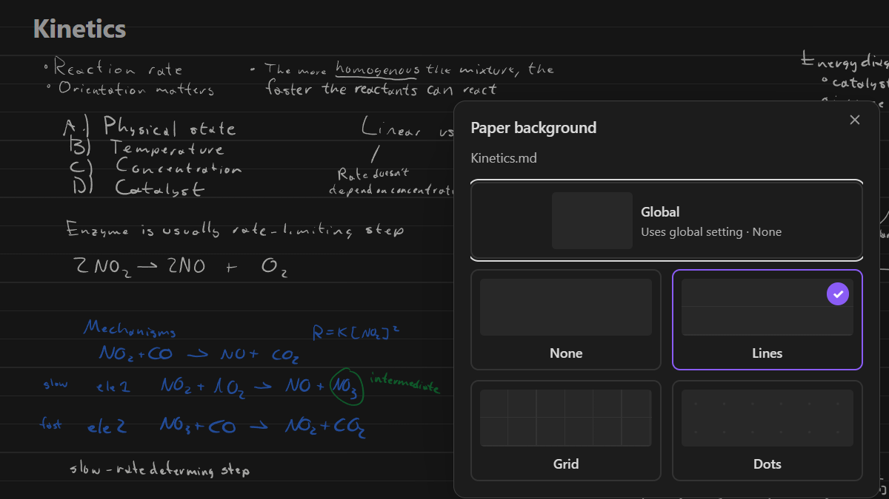
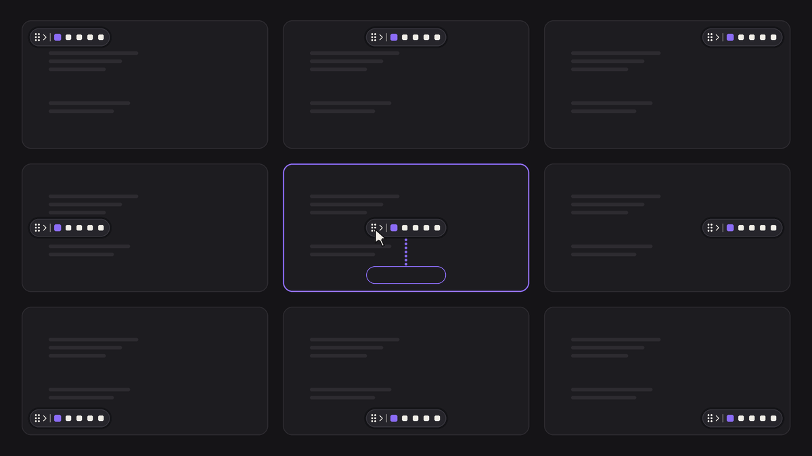
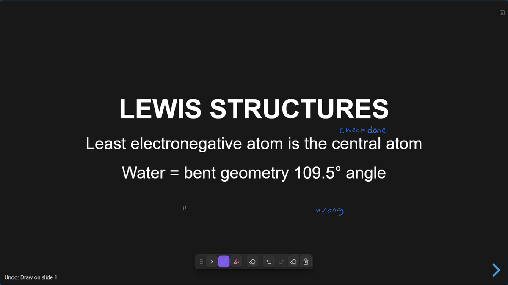
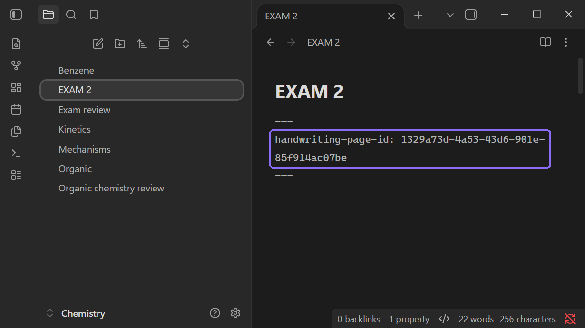

Attach ink to text
Lasso ink next to a line of text. Tap the link button. The ink now moves with that text when you type above it.
Pen ink on ordinary Markdown notes and PDFs in Obsidian.
.handwriting folder in your
vaultRuns on Windows, macOS, Linux, iPad, BOOX and Android.
Open a note and write. Handwriting is free.
Drag sideways
Lasso ink next to a line of text. Tap the link button. The ink now moves with that text when you type above it.
Write and type on the same note.
Lasso ink to move it, resize or rotate it, delete it, or paste it into another note.
Hold the pen still at the end of a stroke and it snaps into a line, arrow, circle, rectangle, star or other shape. Keep the pen down and move it to resize and rotate it.
Press on a line and drag down. Everything below moves with your pen.
Zoom out and keep writing past the edge. Fit brings all your ink back on screen.
One paper for the whole vault, or a different one for each note.

Same toolbar, same tools.
Highlight and write on the PDF itself.
Flatten to a copy with your ink drawn in. It opens in any PDF app.
Snip part of the page and paste it into a note. The snip links back to the PDF page.
Drag it to any of nine spots, or collapse it.

Draw on your slides while you present.

Ink never goes into the note. It lives in its own file, in a
.handwriting folder in your vault.
The note gets one hidden property: the id of that file. Rename or move the note and the ink follows. Turn the plugin off and the note reads like any other Markdown.

Handwriting is free. source code is available here: github.com/ellimist-afk/handwriting
I still work on it almost every night. if you want to buy me a coffee: ko-fi.com/ellimistafk
thank you for using my plugin.
Support on Ko-fiI send the release notes when a new version comes out. Not often.
You get one email to confirm first. Unsubscribe anytime.
Yes!!
Disable the plugin and your text stays exactly the same, the ink just stops rendering. Your notes stay .md. The only thing ever written into one is a single handwriting-page-id line in the properties.
A note you never inked on is never modified. A note you have inked on gets one line in its properties: handwriting-page-id. Nothing else. Your ink lives in its own file in .handwriting/ at your vault root.
Ink sits at a spot on the page, so when the text above it is edited the words can move while the ink stays put. If you want ink to stay with a line, attach it: lasso the ink next to that line. Tap the link button. The ink then moves with that text when you type above it.
Yes. Open the PDF in Obsidian and write on it with the same toolbar you use on notes. Highlight, erase and lasso work there too.
Yes. On iPad, turn Scribble off first: iPad Settings > Apple Pencil > Scribble > Off.
Yes. Run the command “Handwriting: Flatten ink into a copy of this PDF”. It draws your ink into a copy that opens in any PDF app.
Yes. Snip part of the page and paste it into a note. The snip links back to the PDF page.
iPad, Android, BOOX, Windows, Mac and Linux.
Yes.